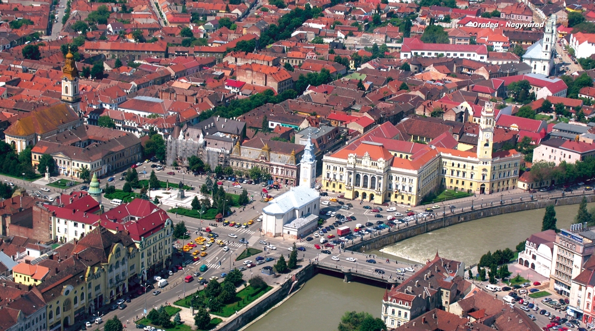

-2-MasterItem.svg)
Grade 3 boys and girls of nearby Mulvey School who were children of sole-support
working mothers.
After a year of planning, getting the program officially recognized by the
provincial government, and
with funding in place by the church, the government and the mothers, the project
began. Major
funding was eventually picked up by the government, with the church supplying
all the facilities and
the volunteers. We began with one staff person and twenty-five or so children.
The program has
grown, and for many years has had two workers and forty to fifty children. A
large group of
volunteers assist at meal time. All equipment has been upgraded to fulfill the
Board of Health
requirements. Members of the congregation carry most of the responsibility for
the work of the child
care board. It is such a well-established program that one couldn’t imagine Westminster without it.
The church sanctuary, halls, and
meeting rooms are used by many
groups in the city. The Manitoba
Chamber Orchestra has its four or five
concerts each year in the sanctuary,
and the orchestra members use most
of the facilities for rehearsing. At
times, it was somewhat a nuisance,
but this was offset for me by the
personal joy to give over my vestry to
many guest artists. I remember best
of all Liona Boyd, Ivan Moravec, Elmer
Iseler, and the Canadian Brass.
Several high schools still have their
June graduations in the sanctuary. Mrs. Litz’s Mennonite Children’s Choir made several of their
records in our church. The Winnipeg Ladies Choir, mainly a Mennonite choir, also
used the sanctuary.
The acoustics are excellent, and even more important, the welcome mat was always
out.
Many other community groups use the excellent facilities at Westminster. At
election time, we had
all-candidates’ meetings. Several organizations, such as the Peace Action Committee, use space
on
our third-floor meeting hall (called the concert hall after the stage was
erected in the early seventies).
Rev. Robert Thompson and Lorraine Thompson
